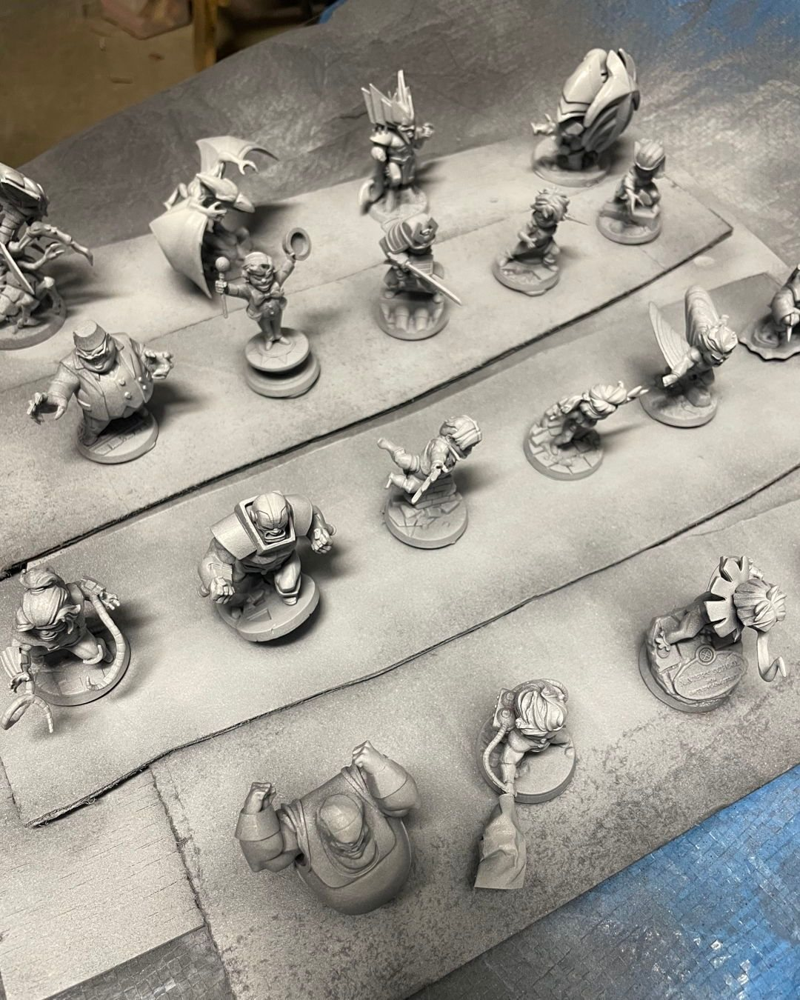

Hobby Jun 16, 2025
Priming X-Men villains
What's your priming process?
I'm just over here priming some X-Men Villains for future me and wondering how you all tackle it. I do batches using Rustoleum rattlecan primers from Lowes (pretty inexpensive). Gray/white for Marvel United, Black/White for Marvel Zombies / Warhammer.
The full guide
- Priming in batches with a rattlecan →Cheap hardware-store primer, the right color for the game, and a whole army done in one session so future you can just paint.
- Quick zenithal priming with two rattlecans →Black or grey first, then a couple of white swipes from above. Free contrast before you open a paint pot.
Gear in this post
- Rust-Oleum Painter's Touch 2X primerCheap rattlecan I prime every batch with. White, grey and black are all on the same page
Affiliate links. All gear